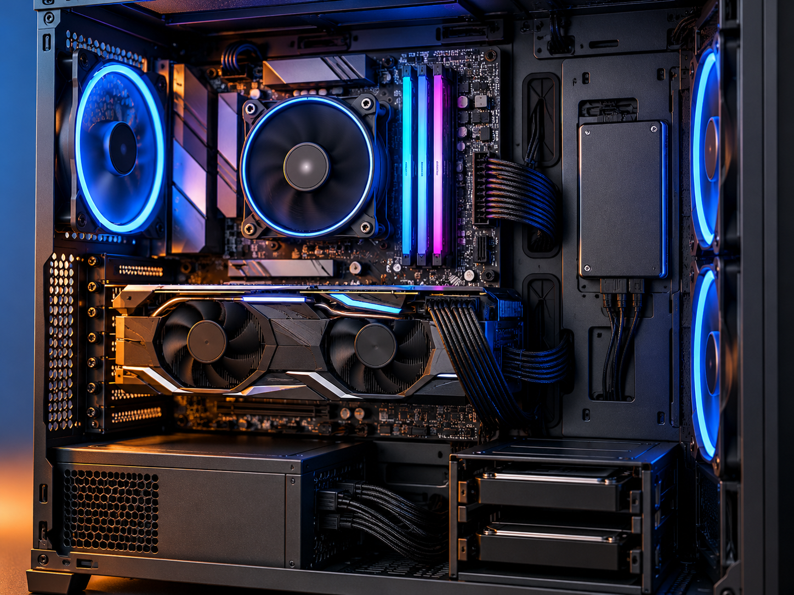

Estudiar y trabajar
Para navegar, utilizar programas de oficina o asistir a clases online, conviene contar con un SSD y suficiente memoria RAM.
Descubre el hardware de tu ordenador

Aprende cómo funciona un ordenador y conoce sus principales componentes.
Si quieres aprender más sobre los componentes de un ordenador, puedes visitar esta página sobre hardware
No todos los ordenadores están preparados para realizar las mismas tareas. Conocer sus componentes nos ayuda a elegir el equipo más adecuado para cada situación.
Para navegar, utilizar programas de oficina o asistir a clases online, conviene contar con un SSD y suficiente memoria RAM.
Los videojuegos exigentes necesitan un buen equilibrio entre procesador, tarjeta gráfica y memoria RAM.
Al trabajar con varias máquinas virtuales, es importante disponer de suficiente RAM, un procesador adecuado y almacenamiento rápido.